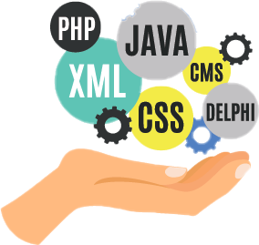

Кто такой программист?
Программист – это специалист, создающий исходный код для программы. Такой программой может быть операционная система компьютера, видеоигра, web или мобильное приложение и даже алгоритм работы микроволновки.

Программисты в настоящее время очень востребованы и имеют высокий уровень оплаты труда. Профессия перспективная, предполагающая карьерный рост, подойдет людям с аналитическим мышлением, интересом к математике и иностранным языка
Мне 20 лет
Студент третьего курса "Самарского государственого колледжа"
Учусь на специальность "Техник-программист"
Программист – это специалист, создающий исходный код для программы. Такой программой может быть операционная система компьютера, видеоигра, web или мобильное приложение и даже алгоритм работы микроволновки.
Прикладным Программистом
Web-программистом
Занимается в основном разработкой программного обеспечения прикладного характера — игры‚ бухгалтерские программы‚ редакторы‚ мессенджеры и т.п
Работает с сетями, но, в большинстве случаев, с глобальными - Интернет. Они пишут программную составляющую сайтов, создают динамические веб-страницы, web-интерфейсы для работы с базами данных
